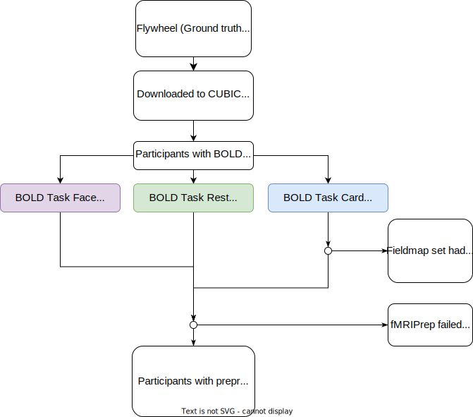

FNDM1
Table of contents
Data Processing Flow & Important Links:
- Flow diagram that describes the lifecycle of this dataset curation and preprocessing:

- DSR GitHub Project Page(Curation/Validation and Processing Queue Status):
https://github.com/PennLINC/Reward/projects/1
Plan for the Data
- Why does PennLINC need this data?
Acquired at UPenn
- For which project(s) is it intended? Please link to project pages below:
- Goal:
Curate and preprocess an amalgam of datasets for a harmonized PennLINC resource
Data Acquisition
- Data acquired by Dan Wolf & Ted Satterthwaite
- Describe the data:
- number of subjects = 56
- types of images = bold (2 runs task-CARD, 2 runs task-FACE, rest), T1w, fieldmaps
Download and Storage
- Original data available on Flywheel
- Source data (NIfTI) on CUBIC in
/cbica/projects/wolf_satterthwaite_reward/original_data/bidsdatasets/fndm1. - Data was copied to
/cbica/projects/wolf_satterthwaite_reward/Curation/bidsdatasets/fndm1and checked in todataladafter removing PHI (below) JSON’s within origial_data were updated using
cubids-add-nifti-info.- Listing metadata fields using
cubids-print-metadata-fieldsgave the following fields:
Acknowledgements
AcquisitionDateTime
AcquisitionMatrixPE
AcquisitionNumber
AcquisitionTime
Authors
BIDSVersion
BandwidthPerPixelPhaseEncode
BaseResolution
CoilString
ConversionSoftware
ConversionSoftwareVersion
DatasetDOI
DeidentificationMethod
DerivedVendorReportedEchoSpacing
DeviceSerialNumber
DwellTime
EchoNumber
EchoTime
EchoTime1
EchoTime2
EchoTrainLength
EffectiveEchoSpacing
FlipAngle
Funding
HowToAcknowledge
ImageOrientationPatientDICOM
ImageType
ImagingFrequency
InPlanePhaseEncodingDirectionDICOM
InstitutionAddress
InstitutionName
InstitutionalDepartmentName
IntendedFor
InversionTime
License
MRAcquisitionType
MagneticFieldStrength
Manufacturer
ManufacturersModelName
Modality
Name
ParallelReductionFactorInPlane
PartialFourier
PatientPosition
PatientSex
PercentPhaseFOV
PhaseEncodingDirection
PhaseEncodingSteps
PhaseResolution
PixelBandwidth
ProcedureStepDescription
ProtocolName
PulseSequenceDetails
ReceiveCoilName
ReconMatrixPE
RefLinesPE
ReferencesAndLinks
RepetitionTime
SAR
ScanOptions
ScanningSequence
SequenceName
SequenceVariant
SeriesDescription
SeriesInstanceUID
SeriesNumber
ShimSetting
SliceThickness
SliceTiming
SoftwareVersions
SpacingBetweenSlices
StationName
StudyID
StudyInstanceUID
TaskName
TotalReadoutTime
TxRefAmp
template
ImageComments
MultibandAccelerationFactor
Offending fields were removed with cubids-remove-metadata-fields in /cbica/projects/wolf_satterthwaite_reward/Curation/code/metadatafields_remove.sh
Curation Process
- Data curation by Tinashe Tapera on the CUBIC project user
wolfsatterthwaitereward - Link to final CuBIDS csvs:
/cbica/projects/wolf_satterthwaite_reward/Curation/code/iterations/iteration7/fndm1/
BIDS Validation:
Data with short bold time series (<3mins) were removed with the Notebook
/cbica/projects/wolf_satterthwaite_reward/Curation/code/RemoveShortBOLD.ipynbAll validation outputs are available in chronological order in
/cbica/projects/wolf_satterthwaite_reward/Curation/code/validate_outputs/fndm1; most recent validation errors being:EVENTS_TSV_MISSING ( Task scans should have a corresponding events.tsv file. If this is a resting state scan you can ignore this warning or rename the task to include the word “rest”. ) : 224 counts
README_FILE_MISSING ( The recommended file /README is missing. See Section 03 (Modality agnostic files) of the BIDS specification. ) : 1 count
NO_AUTHORS ( The Authors field of dataset_description.json should contain an array of fields - with one author per field. This was triggered because there are no authors, which will make DOI registration from dataset metadata impossible. ) : 1 count
Data at this stage were approved for preprocessing.
BIDS Optimization:
All cubids optimization results are available in
/cbica/projects/wolf_satterthwaite_reward/Curation/code/iterations/iter<ITERATION_NUMBER>/fndm1/Final optimization resulted in
/cbica/projects/wolf_satterthwaite_reward/Curation/code/iterations/iter7/fndm1/fndm1_summary.csv
Preprocessing Pipelines
fMRIPrep (version 20.2.3)
- Tinashe Tapera was responsible for running preprocessing pipelines/audits on CUBIC
Exemplar Testing:
- Used cubids to create exemplar dataset:
cubids-copy-exemplars /cbica/projects/wolf_satterthwaite_reward/Curation/bidsdatasets/fndm1/BIDS /cbica/projects/wolf_satterthwaite_reward/Testing/fndm1/exemplars_dir /cbica/projects/wolf_satterthwaite_reward/Curation/code/iterations/iter7/fndm1/fndm1_AcqGrouping.csv - Path to exemplar dataset (annexed to datalad):
/cbica/projects/wolf_satterthwaite_reward/Testing/fndm1/exemplars_dir Path to fmriprep container: Original in
~/dropbox, datalad in/cbica/projects/wolf_satterthwaite_reward/Testing/exemplars_test/fmriprep-container- Adjustments:
- During testing, some fieldmaps were found to be corrupt/unusable for the data, and were removed. These files are in
/cbica/projects/wolf_satterthwaite_reward/Curation/code/iterations/cubids-testing_adjustments/fndm1/purge_broken_fmaps.txt
- During testing, some fieldmaps were found to be corrupt/unusable for the data, and were removed. These files are in
Testing directory was deleted to save space on CUBIC on 12/2/21, once production completed
Production Testing:
- 52/56 subjects completed fMRIPrep successfully
- Path to production inputs:
/cbica/projects/wolf_satterthwaite_reward/Curation/bidsdatasets/fndm1/BIDS - Path to fmriprep run command:
/cbica/projects/wolf_satterthwaite_reward/Production/fndm1/fmriprep/analysis/code/fmriprep_zip.sh - Path to production outputs:
/cbica/projects/wolf_satterthwaite_reward/Production/fndm1/fmriprep/output_ria - Path to fmriprep production audit:
/cbica/projects/wolf_satterthwaite_reward/Production/fndm1/fmriprep/-audit/FMRIPREP_AUDIT.csv - Path to freesurfer production audit: NA
XCP-ABCD (version 0.0.8)
Production Testing:
- 52/56 subjects completed XCP successfully
- Path to production inputs:
/cbica/projects/wolf_satterthwaite_reward/Curation/bidsdatasets/fndm1/fmriprep/merge_ds - Path to xcp run command:
/cbica/projects/wolf_satterthwaite_reward/Production/fndm1/xcp/analysis/code/xcp_zip.sh - Path to production outputs:
/cbica/projects/wolf_satterthwaite_reward/Production/fndm1/xcp/output_ria - Path to xcp production audit: NA
- Path to xcp derivatives:
/cbica/projects/wolf_satterthwaite_reward/Production/fndm1/xcp-derivatives/XCP - Path to xcp derivatives (concatenated): NA
Post Processing
- Who is using the data/for which projects are people in the lab using this data?
- Link to project page(s) here
- For each post-processing analysis that has been run on this data, fill out the following
- Who performed the analysis?
- Where it was performed (CUBIC, PMACS, somewhere else)?
- GitHub Link(s) to result(s)
- Did you use pennlinckit?
- https://github.com/PennLINC/PennLINC-Kit/tree/main/pennlinckit
To Do
- backup to PMACS
- Add task events files